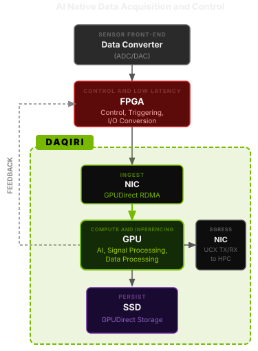

DAQIRI (Data Acquisition for Integrated Real-time Instruments) connects high-bandwidth streaming sensors directly to the NVIDIA compute ecosystem. By abstracting zero-copy data movement from sensor to GPU, DAQIRI puts scalable, real-time AI, signal processing, and scientific computing within reach of the next generation of instruments.
Scientific and industrial instruments generate data that is richest at the source — before it is filtered, decimated, or summarized. DAQIRI places NVIDIA GPU hardware directly in that data path, forging a tight bond between upstream sensors, their data converters, and the NVIDIA compute ecosystem. The result is a new foundation for developers: the ability to work with instrument data in its rawest form, at wire speed, and to build a new class of autonomous experiments where AI can observe phenomena directly at the source, augment human analysis, and steer experiments in real time. Streaming Ethernet data in, GPU tensor out.

Hundreds of gigabits per second with proper hardware and CPU/NUMA tuning. Direct access to NIC ring buffers keeps latency at PCIe transit time only.
Two GPU receive modes: Header-data split (headers to CPU, payload to GPU — recommended) and Batched GPU (entire packets to GPU for maximum bandwidth).
Route packets to specific queues by UDP port, IPv4 payload length, or custom flex items — all in NIC silicon, before any software runs.
Run RDMA READ, WRITE, and SEND over standard Ethernet via RoCE — no specialized InfiniBand fabric required. The same libibverbs API also supports InfiniBand for environments where it is available.
Define memory regions, NIC interfaces, TX/RX queues, and flow rules in a single YAML file — or build the same config in C++ code. Switch backends, memory kinds, and buffer sizes without recompiling.
A ready-to-run container bundles all userspace dependencies including a dmabuf-patched DPDK — no host-side dependency setup, no peermem kernel module. From docker pull to running benchmarks in minutes.
Requires a ConnectX-6 Dx+ NIC, Linux (kernel 5.4+), and the CUDA Toolkit.
Install MLNX5/InfiniBand drivers with peermem support (inbox on Ubuntu ≥5.4 and <6.8, or OFED from DOCA-Host 2.8+). Install the CUDA Toolkit.
Select backends with DAQIRI_MGR. Valid values: dpdk, rdma.
# Configure, build, install cmake -S . -B build \ -DBUILD_SHARED_LIBS=ON \ -DDAQIRI_BUILD_PYTHON=OFF \ -DDAQIRI_MGR="dpdk socket rdma" cmake --build build -j cmake --install build --prefix /opt/daqiri
The Dockerfile builds DPDK from source with dmabuf patches — no peermem needed inside the container. Set BASE_IMAGE=torch to build on top of NGC PyTorch for Torch / TensorRT inference workflows.
BASE_TARGET=dpdk \
DAQIRI_MGR="dpdk socket rdma" \
scripts/build-container.sh
Isolate CPU cores, enable hugepages, configure NUMA affinity. Run the diagnostic script:
python3 python/tune_system.py
Edit the YAML to match your hardware (PCIe BDF, CPU cores, IPs), then:
./build/examples/daqiri_bench_raw_gpudirect \ examples/daqiri_bench_raw_tx_rx.yaml \ --seconds 10
#include <daqiri/daqiri.h> // Init from YAML config daqiri::daqiri_init("config.yaml"); // Non-blocking burst receive daqiri::BurstParams *burst; auto s = daqiri::get_rx_burst( &burst, port_id, queue_id); if (s == daqiri::Status::SUCCESS) { int n = daqiri::get_num_packets(burst); for (int i = 0; i < n; i++) { void* p = daqiri::get_packet_ptr( burst, i); // process p ... } daqiri::free_all_packets_and_burst_rx( burst); }
// Seg 0 = headers (CPU) // Seg 1 = payload (GPU) for (int i = 0; i < n; i++) { void* hdr = daqiri::get_segment_packet_ptr( burst, 0, i); void* pay = daqiri::get_segment_packet_ptr( burst, 1, i); // GPU ptr uint32_t hlen = daqiri::get_segment_packet_length( burst, 0, i); uint32_t plen = daqiri::get_segment_packet_length( burst, 1, i); // pay is already on GPU — no copy }
Benchmark executables and YAML configs included in the examples/ directory.
auto burst = daqiri::create_tx_burst_params(); daqiri::set_header(burst, port_id, queue_id, batch_size, num_segs); daqiri::get_tx_packet_burst(burst); for (int i = 0; i < batch_size; i++) { daqiri::set_eth_header(burst,i,dst_mac); daqiri::set_ipv4_header(burst,i, ip_len,IPPROTO_UDP,src_ip,dst_ip); daqiri::set_udp_header(burst,i, udp_len,src_port,dst_port); daqiri::set_udp_payload(burst,i, payload_ptr,payload_size); } daqiri::send_tx_burst(burst);
// Batched GPU: packets arrive in // CUDA-addressable buffers. Reordering // is configured with rx.reorder_configs. __global__ void noop_packet_kernel(void* pkt) { (void)pkt; } if (daqiri::get_num_packets(burst) > 0) { void* pkt = daqiri::get_packet_ptr(burst, 0); noop_packet_kernel<<<1, 1, 0, stream>>>(pkt); } daqiri::free_all_packets_and_burst_rx( burst);
daqiri:
cfg:
version: 1
manager: "dpdk"
master_core: 3
memory_regions:
- name: "RX_CPU"
kind: "huge"
affinity: 0
num_bufs: 51200
buf_size: 64 # headers (~42 B)
- name: "RX_GPU"
kind: "device"
affinity: 0
num_bufs: 51200
buf_size: 1000 # payloadrx: flow_isolation: true queues: - name: "rx_q_0" id: 0 cpu_core: 9 batch_size: 10240 memory_regions: - "Data_RX_CPU" - "Data_RX_GPU" flows: - name: "flow_0" id: 0 action: {type: queue, id: 0} match: udp_src: 4096 udp_dst: 4096 ipv4_len: 1050
# Build with examples cmake -S . -B build \ -DDAQIRI_BUILD_EXAMPLES=ON \ -DDAQIRI_MGR="dpdk socket rdma" cmake --build build -j # TX/RX throughput (10 s) ./build/examples/daqiri_bench_raw_gpudirect \ examples/daqiri_bench_raw_tx_rx.yaml \ --seconds 10 # Header-data split / GPUDirect ./build/examples/daqiri_bench_raw_hds \ examples/daqiri_bench_raw_tx_rx_hds.yaml \ --seconds 10
# RDMA client/server (10 s) ./build/examples/daqiri_bench_rdma \ examples/daqiri_bench_rdma_tx_rx.yaml \ --seconds 10 --mode both # Software loopback (no physical link) ./build/examples/daqiri_bench_raw_gpudirect \ examples/daqiri_bench_raw_sw_loopback.yaml \ --seconds 10 # Multi-queue RX ./build/examples/daqiri_bench_raw_gpudirect \ examples/daqiri_bench_raw_rx_multi_q.yaml \ --seconds 10
Step-by-step guides from first build to production-grade deployment.
DAQIRI_MGR, DAQIRI_BUILD_PYTHON, BUILD_SHARED_LIBS, and DAQIRI_BUILD_EXAMPLES. Build for A100/H100 (CUDA arches 80, 90).build-container.sh. The container ships a dmabuf-patched DPDK, so peermem is not required.python/tune_system.py to diagnose common configuration issues.huge, device, host_pinned), RX/TX queue setup, flow steering rules, flex items, and RDMA client/server config schemas.get_segment_packet_ptr(), and reorder scattered GPU buffers with the built-in CUDA kernel.daqiri_bench_rdma to validate the connection.accurate_send in the TX config and use set_packet_tx_time() for PTP-synchronized, hardware-scheduled packet transmission on ConnectX-7+.Announcements, publications, and community updates about DAQIRI.
Clone the repo, build with CMake, and start streaming sensor data directly into your GPU-accelerated pipeline today.
# Clone and build git clone https://github.com/NVIDIA/daqiri cmake -S daqiri -B build \ -DBUILD_SHARED_LIBS=ON \ -DDAQIRI_MGR="dpdk socket rdma" cmake --build build -j